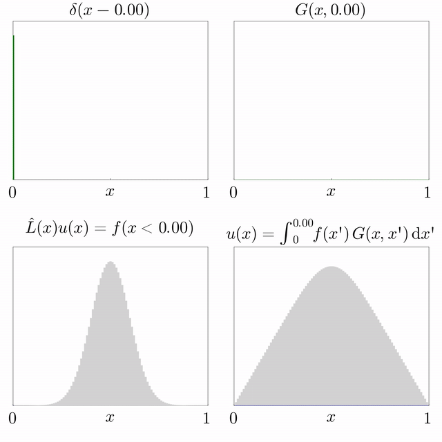

Quantum Zeno Effect
start with something familiar.
imagine you are learning to ride a bicycle. at first, you wobble. if no one interferes, the wobble slowly grows into either balance or a fall. now imagine someone stopping you every half second, holding the bike upright, then letting go, then stopping you again. you never fall. but you also never really ride.
there is an old saying that a watched pot never boils. in quantum mechanics, something surprisingly similar can actually happen.
the name comes from zeno of elea, a greek philosopher who lived around 450 bc. zeno argued that motion is impossible. his most famous paradox: to cross a room, you must first reach the halfway point. to reach the halfway point, you must first reach the quarter point. and so on, infinitely. an infinite number of steps, zeno concluded, can never be completed.
aristotle thought this was wrong, and he was right. an infinite series of steps can have a finite sum. crossing a room takes finite time. but zeno's intuition that infinite subdivision can freeze motion turns out to have a genuine echo in quantum mechanics, just not where he expected it.
a quantum system is a very small physical system, like an atom or an electron, whose state changes smoothly over time when left alone. an excited atom, for instance, slowly relaxes toward its ground state. this evolution is continuous and governed by the schrödinger equation.
but measuring a quantum system is not like glancing at a clock. it is a physical interaction that forces the system into a definite state. before measurement, the atom is in a superposition: partly excited, partly relaxed, in a precise mathematical combination. the moment you measure it, the superposition collapses. you get a definite answer, and the system restarts its evolution from that new definite state.
this is why frequent measurement freezes decay. immediately after a measurement that finds the atom excited, the probability that the next measurement also finds it excited is very close to one, because the system has barely had time to evolve. measure again quickly, and again the atom is almost certainly still excited. in the limit of continuous measurement, the atom never decays at all. zeno's infinite subdivision, which failed to stop a person crossing a room, actually does stop an atom from changing its state.

this is the quantum zeno effect, and it has been experimentally confirmed. cook and wineland demonstrated it in 1990 using trapped beryllium ions, showing that frequent measurements on a two-state system genuinely suppressed transitions between states.
now here is the twist.
the zeno effect assumes you are measuring frequently enough that the system is always caught near its starting state. but what if you measure at an intermediate rate, not too fast and not too slow? it turns out that for many systems, measuring at just the right frequency does not slow the decay. it speeds it up.
this is called the quantum anti-zeno effect, and it is the more unsettling result. the same act of measurement that freezes a system when done rapidly can accelerate its decay when done at a particular intermediate rate. the reason is resonance: if the measurement interval matches a natural timescale of the system, each interruption nudges the system toward decay rather than away from it.
so measurement does not simply slow things down or leave them alone. depending on how often you look, you can freeze a quantum system, leave it to evolve naturally, or push it toward its fate faster than it would have arrived on its own.
zeno thought observation was irrelevant to motion. in quantum mechanics, observation is part of the dynamics. how often you look is a physical parameter, as real as temperature or voltage, and it shapes what happens.